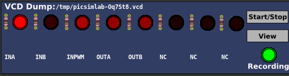
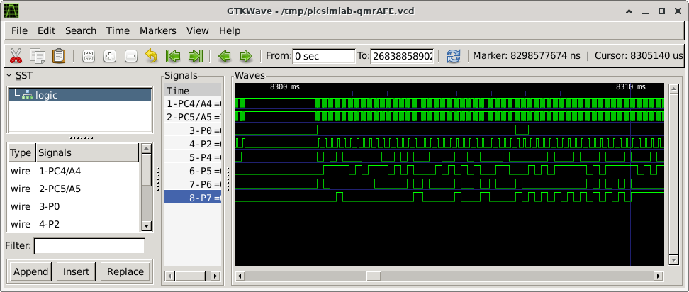
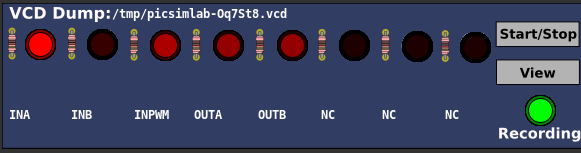
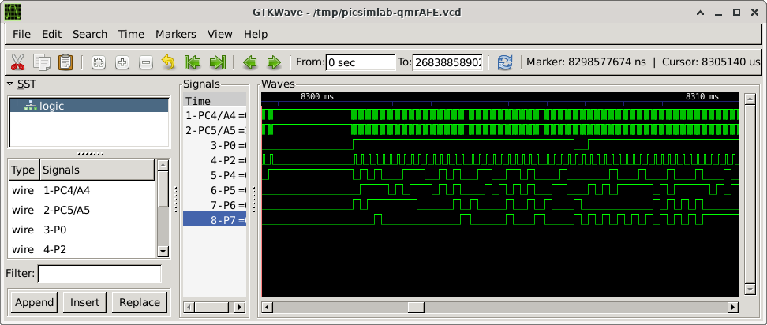

10.5.4 VCD Dump
This part is a digital value file dump (VCD) recorder. The VCD generated file can be visualized with one external viewer like gtkwave or pulseview.


This part is a digital value file dump (VCD) recorder. The VCD generated file can be visualized with one external viewer like gtkwave or pulseview.

